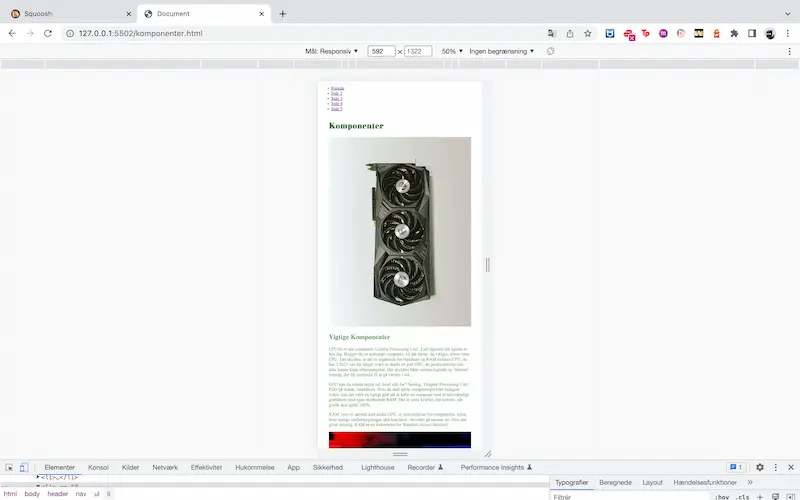
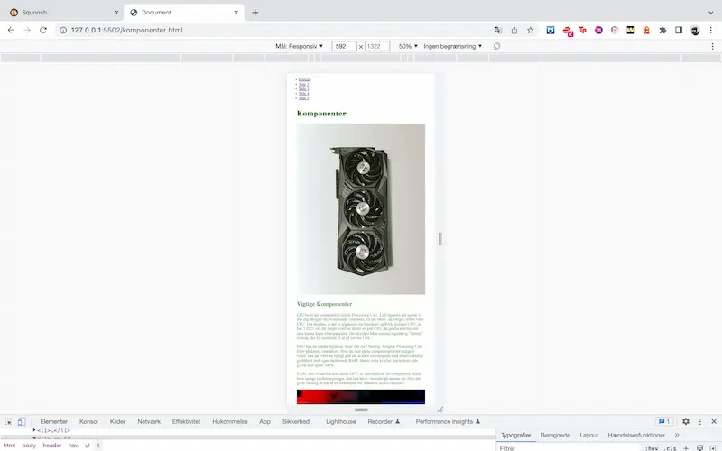

TEMA 2
02.01.02 - Website (Studiestartsprøven)
I tema 2 havde vi i starten af temaet en studiestarsprøve, hvor vi skulle lave et website udfra nogle billeder og tekst som vi fik udleveret.
Sitet skulle både være responsivt i mobilefirst og desktop.
I tema 2 havde vi i starten af temaet en studiestarsprøve, hvor vi skulle lave et website udfra nogle billeder og tekst som vi fik udleveret.
Sitet skulle både være responsivt i mobilefirst og desktop.
I tema 3 fik vi en introduktion til UI design og Adobe XD, samt hvordan man går fra sketch i hånden til protype.
I tema 5 fik vi til opgave at skabe et redesign på en virksomheds allerede eksisterende hjemmeside. Vi skulle selv sørge for at komme i kontakt med virksomhederne.
 
